We would rather stock fewer products we can stand behind than fill every shelf.
When something no longer earns its place, it comes off.
Every product sits on a shelf, and every shelf sits on one map, so you can see
the whole store from the first page. Fewer products also means each one is
easier to find, and easier to choose between.